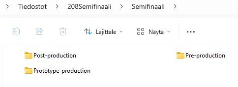
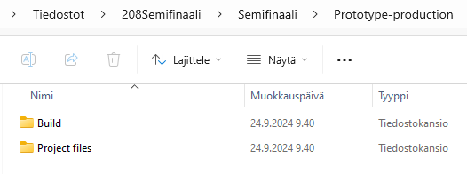
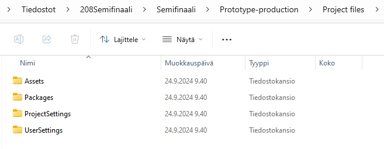

Tämä on opetuskäyttöön muokattu versio kevään 2024 semifinaalitehtävästä lajissa 208 Pelituotanto. Alkuperäinen tehtävänanto löytyy osoitteesta: DropBox: Taitaja-tehtäväpankki.
208 Pelituotanto, semifinaali
Tehtävänanto
Monipuolinen Roguelike-pelin Prototyyppi
Asiakas etsii kattavaa prototyyppiä roguelike -pelille, jossa pelaajan kuollessa peli käynnistyy uudelleen, tarjoten jatkuvan haasteen. Tärkeänä osana peliä on varusteet ja/tai powerup -systeemi, joka antaa pelaajalle mahdollisuuden parantaa hahmonsa kykyjä ja selviytyä pidemmälle. Asiakas toivoo myös suunnitteludokumentin, esimerkiksi High Concept Documentin (tai muun vastaavan dokumentin), sekä lyhyen esitysmateriaalin, esimerkiksi PowerPoint muodossa (tai muussa vastaavassa muodossa).
Keskeiset Ominaisuudet:
- Permanent Death: Pelaajan kuollessa/hävitessä peli alkaa alusta, mutta säilyttää joitakin saavutuksia tai edistyksiä, jotta pelaaja pysyy motivoituneena.
- Varusteet ja Powerup -systeemi: Integroi peliin varusteet/powerup-mekaniikka, joka tarjoaa pelaajalle erilaisia aseita, varusteita tai muita satunnaisia parannuksia. Varusteet/parannukset voivat vaikuttaa hahmon ominaisuuksiin, kuten nopeuteen, voimaan tai puolustukseen
- Graafinen Tyyli ja Perspektiivi:Graafinen tyyli on vapaa, eikä peli ole rajoitettu 2D- tai 3D -grafiikkaan. Perspektiiviä ei ole määritelty, joten taiteilija voi toteuttaa pelin visuaaliset elementit luovasti.
- Ääni ja Musiikki: Musiikki ja äänet eivät ole välttämättömiä. Tässä vaiheessa ne eivät ole pakollisia, mutta voivat olla harkinnanvaraisia lisäyksiä, mikäli mekaniikat vaativat ääniä. Tavoitteena on luoda prototyyppi, joka tarjoaa pelaajalle monipuolisen ja koukuttavan kokemuksen, samalla mahdollistaen graafisen suunnittelijan luovuuden kukoistamisen. Suunnitteludokumentin, prototyypin ja esityksen tulee olla asiakkaan toiveen mukainen
Pre -production
Laadi lyhyt ja ytimekäs High concept document. Dokumentin tarkoitus on kertoa ulkopuoliselle myyvästi pelin keskeiset asiat. Pyri tekemään dokumentista yhden A4-sivun kokoinen. Voit käyttää dokumentin tekemiseen itsellesi sopivinta ohjelmaa (MS Word, Canva tms).
- Otsikkoon pelin työnimi ja tagline.
- Pelaajan motivointi - mitä tarkoitus tehdä jotta peli voitetaan?
- Genre - mikä on pelin genre?
- Kohdeyleisö - kenelle peli on tarkoitettu? Onko pelillä ikärajoitus?
- Kohdelaitteisto - millä laitteistolla peliä on tarkoitus pelata? Miten se on tarkoitus julkaista?
- Unique selling points
Prototype -production
Tässä vaiheessa laaditaan Unity3D-prototyyppi pelistä.
- Huolehdi että Asset-kansion alla materiaali järjestetty loogisesti kansioihin (Scenes, Images, Scripts, jne).
- Kommentoi scriptien metodit lyhyesti lisäämällä kommenttilohko funktion yläpuolelle. Esimerkki:
/** * Moving the player character */ void Start() { - Huomioi nimeäminen koodissa ja editorissa.
- Muuttujien etuliitteet kertomassa tyyppiä (txtName, imgBackground jne.)
- Yhtenäinen nimeämiskäytäntö, valitse onko kaikki koodi englanniksi vai suomeksi!
Post -production
Laaditaan MS PowerPoint-esitys jonka avulla esitellään prototyyppi ulkopuoliselle henkilölle.
- Etusivu: pelin työnimi ja mahdollinen "tagline", alaotsikkoon tekijöiden nimet
- Esittely: kerro pelin tarkoitus, mitä pelaajan tulee tehdä voittaakseen peli. Mikä on pelin kohdeyleisö?
- Pelimekaniikka: miten peli toimii (liikkuminen hiirellä / näppäimistöllä, millä komennoilla?), Ota kuvakaappaus (tai tarvittaessa useampi) pelistä ja kerro mitä kuvassa näkyy.
- Itsearvio: mikä oli tavoitteenne ja miten onnistuitte siinä, miten hyvin aika riitti työn tekemiseen?
Pyri yhtenäiseen ulkoasuun kaikissa työn vaiheissa (High concept document, prototyyppi ja PowerPoint). Pyri käyttämään samoja värejä ja fontteja mikäli mahdollista.
Tehtävän palautus
Työ palautetaan GitHub-repoon omassa kansiossa 208_Pelituotanto_Semifinaali. Tiedostot jaotellaan kolmeen eri kansioon arviointimoduulien mukaisesti, joka nopeuttaa ja selkeyttää arviointia huomattavasti. Nämä moduulit ovat nimeltään ”Pre-production”, “Prototype -Production” ja ”Post-Production”. Pelin build ja projektin tiedostot laitetaan omiin kansioihin ”Prototype-Production” kansion sisälle.
Esimerkki kansioista:


